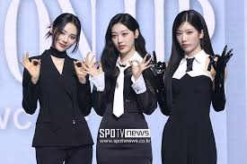

ODD EYE CIRCLE
A música do ODD EYE CIRCLE se apresenta com um conceito de garota apaixonada em torno do tema do amor e da atração. As membros são retratados como brincalhonas e tentadoras enquanto expressam seu carinho e sedução para com seus entes queridos. As três garotas de ODD EYE CIRCLE falam sobre como você não deve esperar que o amor aconteça passivamente, mas deve tomar a iniciativa de fazer isso acontecer sozinho.
Cada integrante tem um olho único que brilha em uma lua crescente ascendente em sua cor representativa (Kim lip - vermelho; Jinsoul - azul e Choerry - roxo). As mesmas também são associados a uma lua (Choerry - Crescente; Kim Lip - Cheia e Jinsoul - Minguante). Acredita-se que eles possuem poderes únicos, onde Choerry consegue viajar entre dimensões e mundos por espelhos e com a cereja; Jinsoul consegue se teletransportar e Kim Lip tem o poder de realizar um eclipse.
| ÁLBUM | MÚSICA TÍTULO | ANO DE LANÇAMENTO |
| Mix & Match | girl front | 2017 |
| ODD EYE CIRCLE (Version Up) | Air Force One | 2023 |
